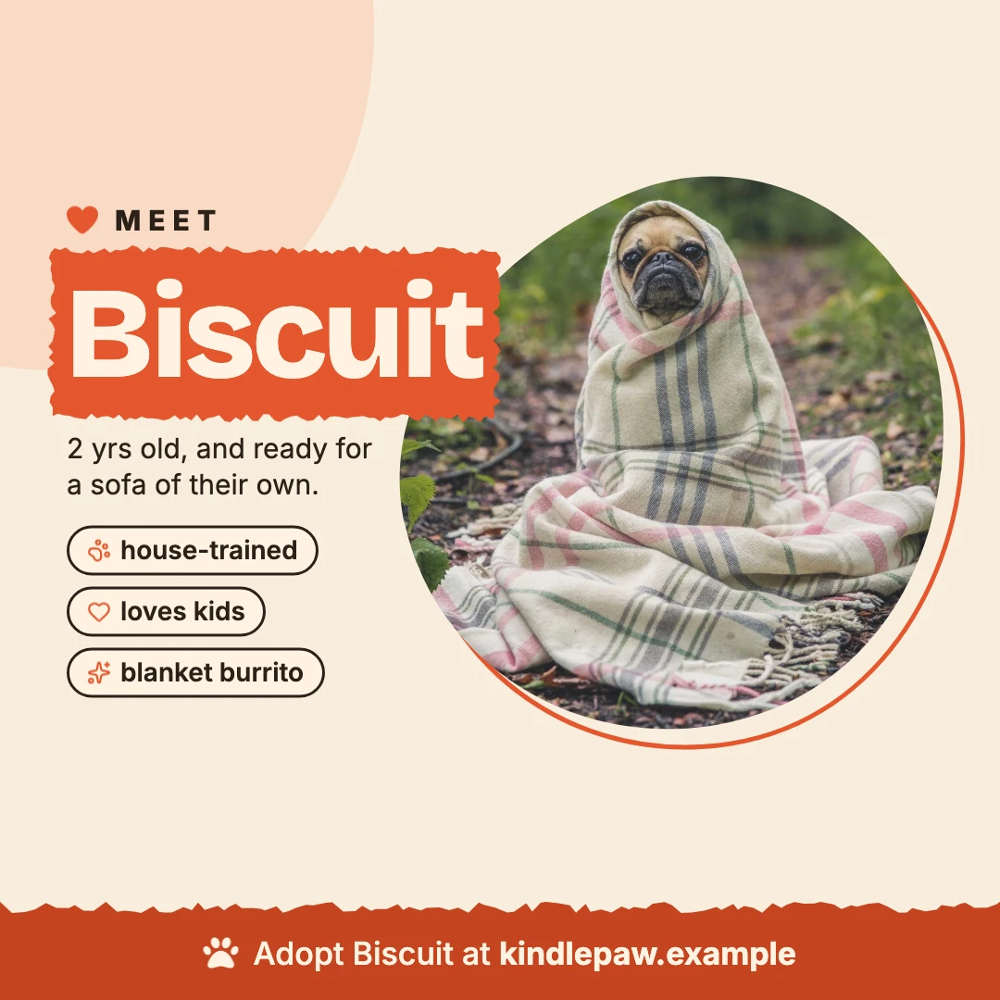
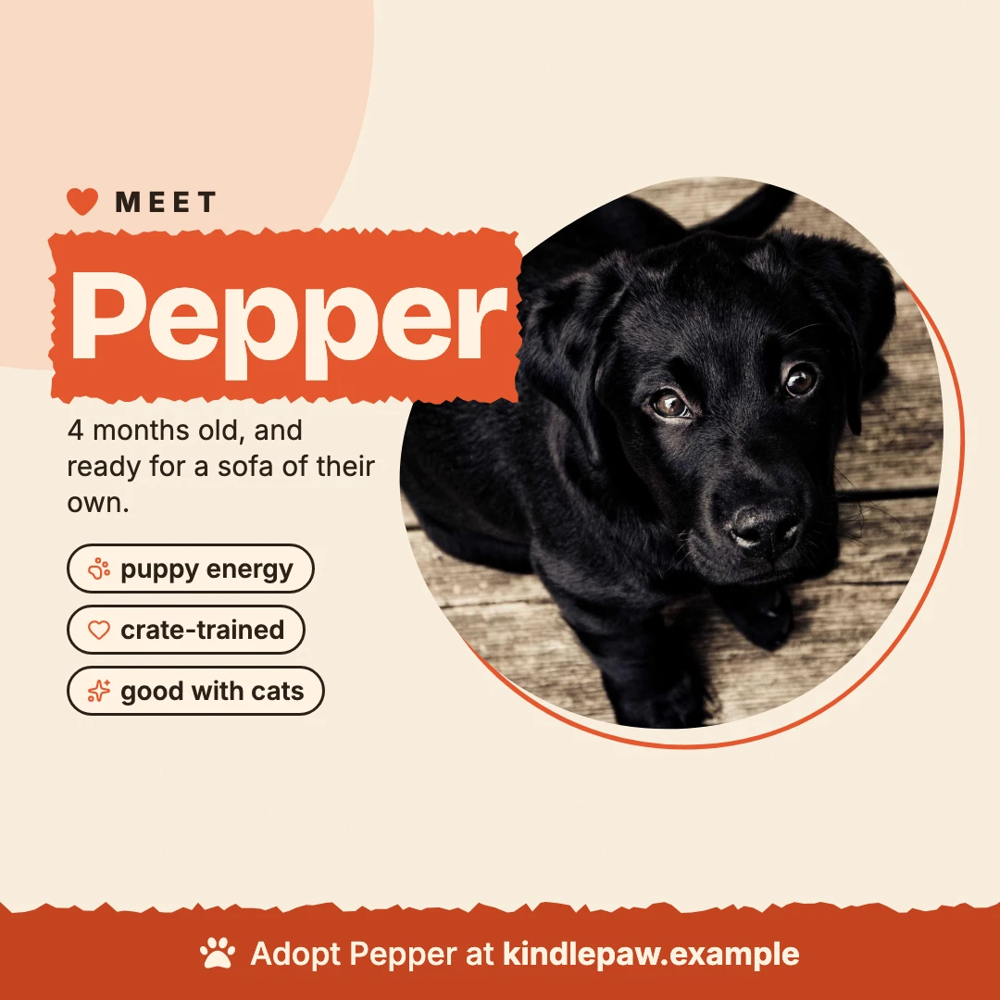
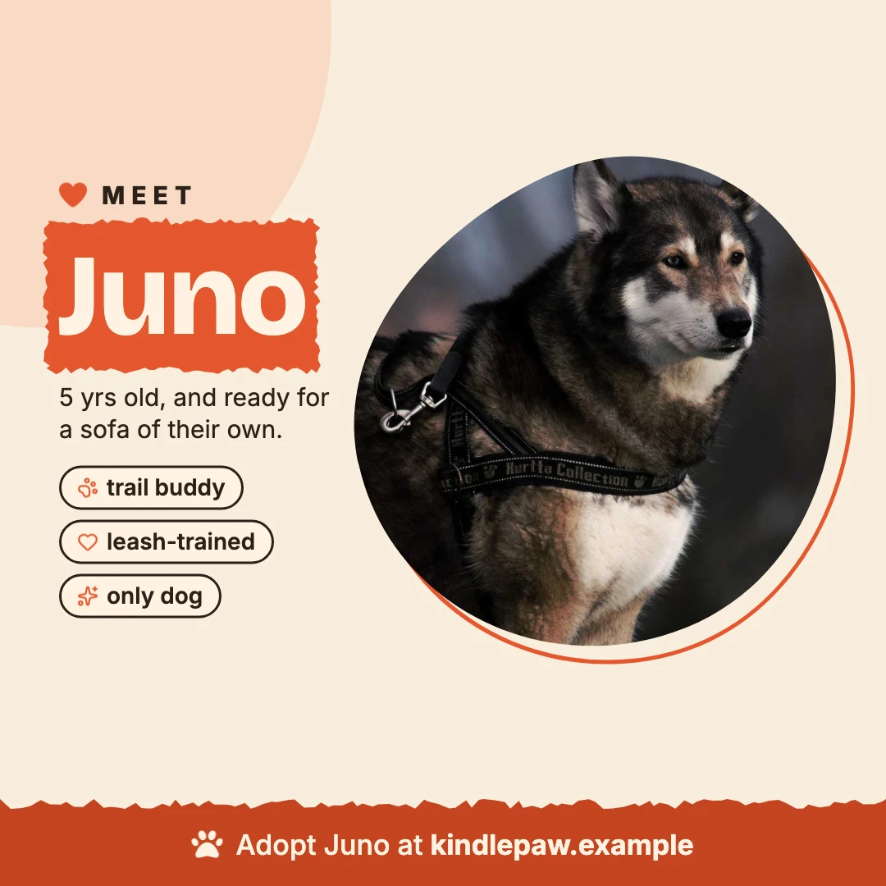
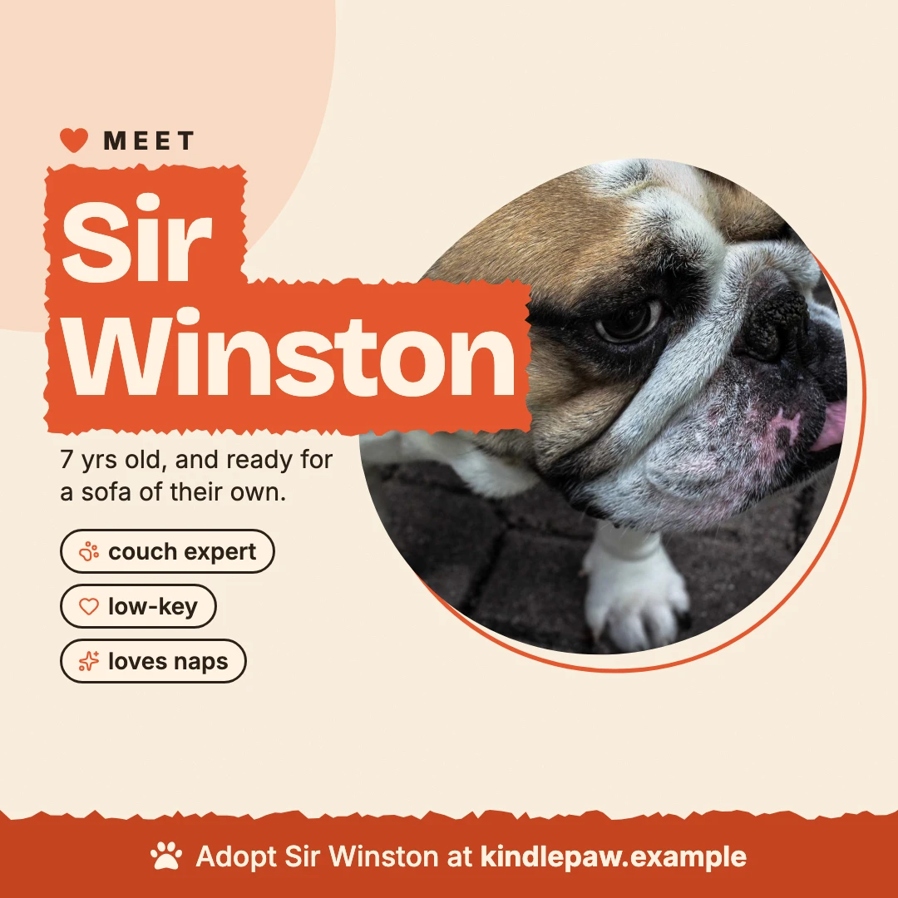

Kindlepaw Rescue Adoption posts
1 template · 4 dogs · a post and an animated story
The same card, one row per dog: name, age, traits and photo come from the data.




Photos: Matthew Wiebe, André Spieker, Alexander Dimitrov, Yamon Figurs / Unsplash